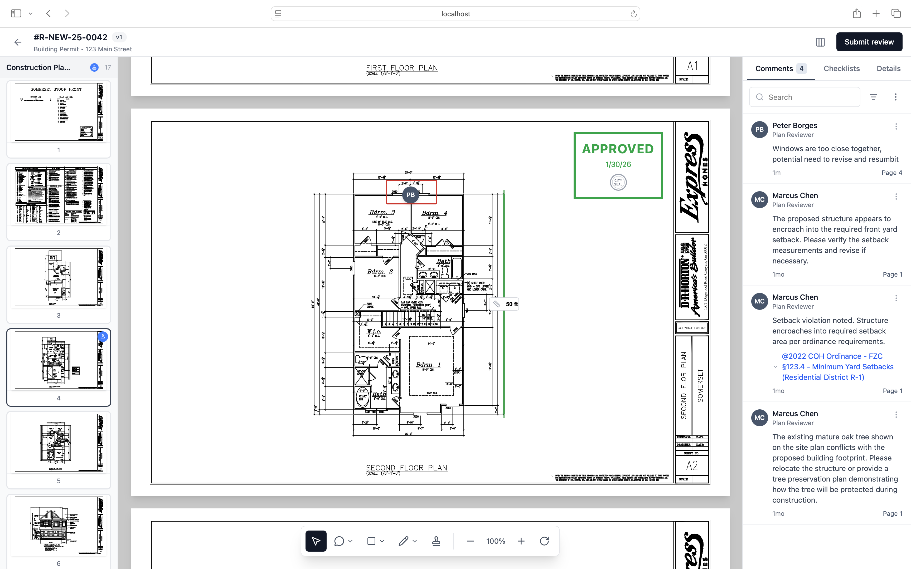

Modernizing the review process for local government inspectors

This was my first major project after joining GovWell: designing a 0→1 integrated Plan Review experience that would allow government staff to complete an entire permit record—from intake to decision—without leaving our platform.
During early discovery calls, we noticed a major gap: Customers were exporting plan sets and switching to third-party tools to complete core review workflows. That created user friction, inconsistent records, and broken audit trails. Closing this gap became critical to launching a competitive permitting solution.
Local governments struggle with outdated, paper-heavy plan review processes that are:
Reviewers and applicants need a modern, digital workflow that:
Municipal plan reviewers are public servants managing heavy workloads of building applications. They vary significantly in:
Designing a tool for them required striking the right balance: Simple enough for a junior reviewer, powerful enough for a seasoned inspector while providing insights to applicants.
"We're drowning in paper. Tracking which version of plans we're reviewing and what changed between submissions is nearly impossible." — Alicia Dixon, Building/Onsite Permit Technician, Paradise, CA
"…I have to keep moving across GovWell and Bluebeam to finish reviewing applications, right now it's still easier to work on paper for us." — Aaron Gillum, Building Inspector, Hutto, TX
"There's no visibility into where plans are in the review process. Applicants call constantly asking for status updates, and we waste time tracking down information manually." — Jonathan Fanning, Building Inspector, Decatur, TX
Reviewers couldn't complete plan reviews inside GovWell; they had to export PDFs to external tools. This created data fragmentation, slowed teams down, and made GovWell feel incomplete.
Reviewers had no structured way to provide comments or request revisions. This forced them into email threads or sticky notes on printed plans.
Without digital workflows, review cycles were slow and untrackable. Users couldn't easily identify what changed between versions or who was waiting on whom.
Feedback was scattered across email, PDFs, physical copies, and shared drives.
GovWell Plan Review is a comprehensive digital platform that replaces outdated, paper-based processes with a streamlined, transparent system. The solution enables reviewers to efficiently manage submissions, collaborate with stakeholders, and track progress through every stage of the review cycle.
To solve end-to-end workflow gaps, we introduced native tools for: drawing shapes and markups, measuring distances and areas, and commenting directly on plan sheets. This allowed all review work to happen within GovWell—no exports needed.
I designed side-by-side and overlay comparison tools that allow reviewers to instantly identify changes between plan submissions. A "Modified" badge automatically appears next to any documents that differ from the previous version, eliminating the time-consuming task of manually comparing plans.
This feature addresses the critical pain point of tracking version changes, enabling reviewers to focus their attention on what actually changed rather than spending hours cross-referencing documents.
Inspectors often use stamps for approvals, rejections, or conditional notes. We added the ability to add custom and agency-provided stamp uploads, drag-to-place functionality, resize and rotation, ability to remove backgrounds from scanned existing stamps, and audit logging of who applied what stamp and when.
We automated the process of turning markups into structured correction items. Now reviewers can convert annotations into standardized correction reports, reports are automatically emailed to applicants, and reduce manual work and ensure consistency. This cut out hours of manual PDF or paper editing per review cycle.
Through weekly feedback sessions with planning and engineering reviewers, we made iterative improvements:
The Plan Review experience transformed GovWell from a permitting intake tool into a fully integrated review platform. By closing the workflow gap, we increased product stickiness, improved turnaround times, and helped municipalities modernize one of the most painful steps in permitting.